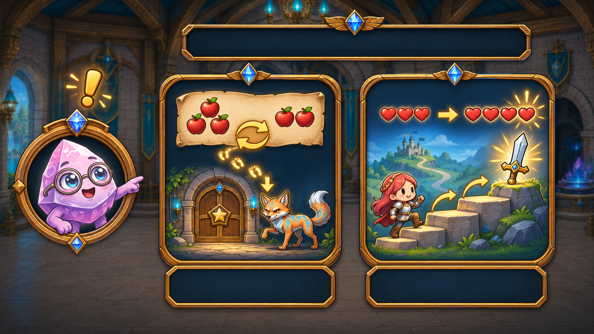
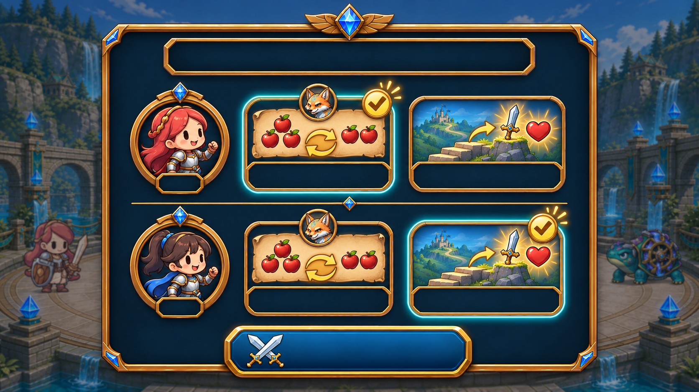
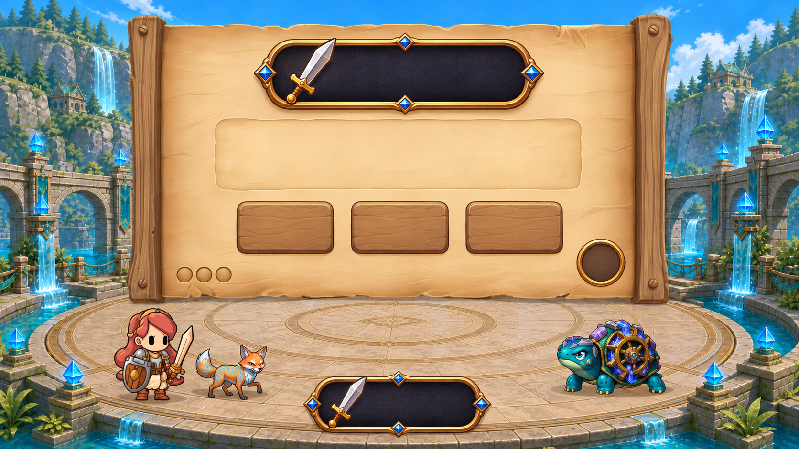
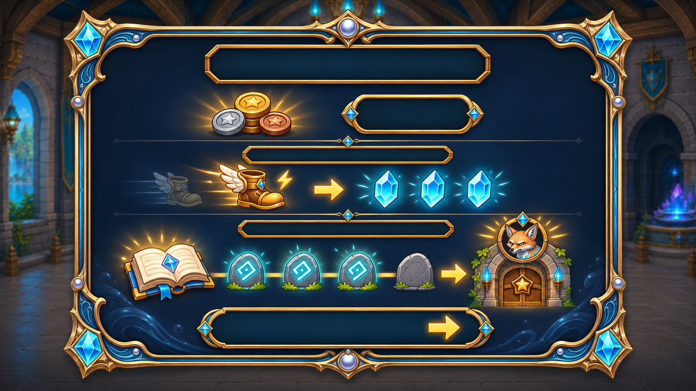
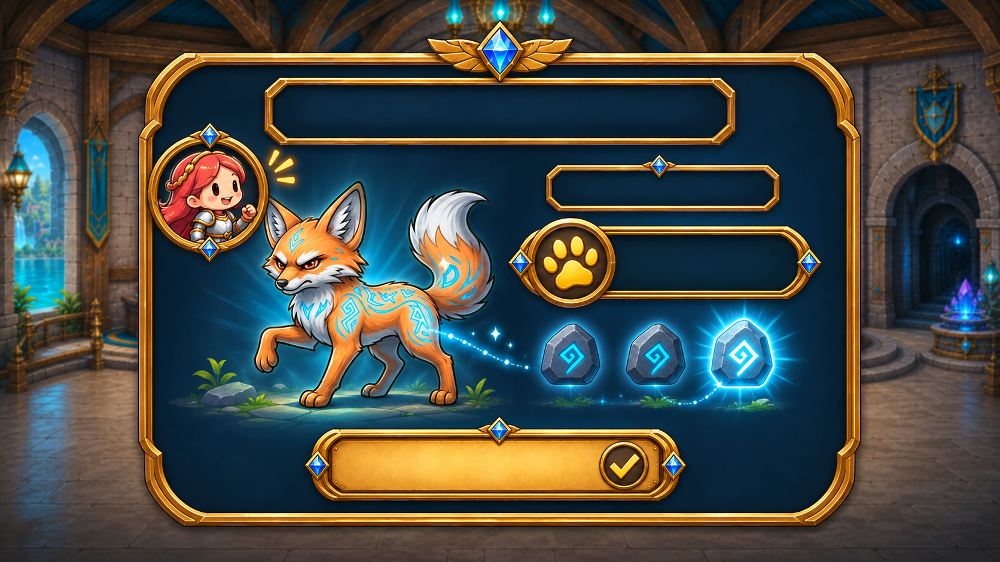

Trénovat / Dál
Pět generovaných výtvarných návrhů zasazených do prostředí hry. Popisky a čísla jsou samostatné vrstvy. U MathBoardu lze přepínat všechny čtyři výsledky odpovědi.
1. Zyx představí obě cesty

NÁVRH · V1První nabídka u Zyxe při domluveném milníku. Vlevo známé příklady → postup ke katakombám → osobní liška. Vpravo další cesta → silnější útok a více životů. Obě cesty mají stejnou váhu. Krátká animace a hlas ukážou souvislosti; samotné kliknutí na Trénovat mazlíčka neudělí.
2. Každé dítě si před soubojem vybere samo

NÁVRH · V1Portréty jednoznačně přiřazují volbu dítěti. Opakují se stejné obrázky jako u Zyxe. V jednom společném souboji může každé dítě dostávat příklady podle svého cíle. Zobrazený stav má první hráčka Trénovat, druhá Dál.
3. Síla příkladu přímo nad zadáním

NÁVRH · V1 +
+4 → 0 / 4 / 5 podle první odpovědi. Za správnou rychlou odpověď se přímo ukáže +1. Dole už bylo nasbíráno 8 bodů: chyba je nesmaže, běžná odpověď dá celkem 12 a rychlá 13. Po chybě obrázkové dopočítání ukáže správný výsledek, ale nepřidá útok. V hotové hře by získané body přelétly z horního ukazatele do součtu tahu.
4. Výhra: běžná odměna, mana za zlepšení a cesta ke zkoušce

NÁVRH · V1Stejná odměna v mincích za stejný souboj. Tři modré krystaly ukazují ilustrační bonus many za zlepšení vlastního výkonu. Dole jsou zvládnuté dovednosti na cestě ke katakombám — obyčejný souboj ještě neuděluje lišku. Přesné množství many i počet kroků je součást dalšího vyvážení.
5. Osobní liška po katakombové zkoušce

NÁVRH · V1Portrét ukazuje majitelku. První úspěšná osobní zkouška přinese lišku; další její vylepšení. Tento obrázek ukazuje právě posílení. I při společném hraní musí postup patřit konkrétnímu dítěti.